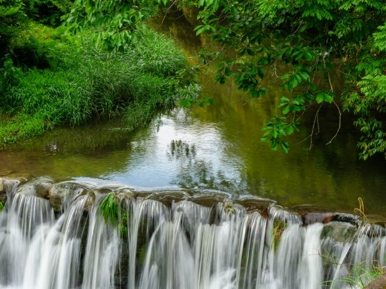
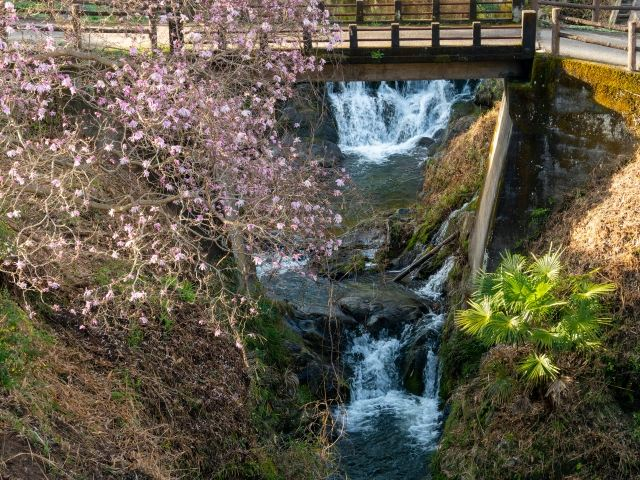

歴史を刻む飛鳥の川
飛鳥時代から人々の生活と関わってきた川で、古代の風景を感じながら散策できます。

飛鳥川は、明日香村の風景を代表する歴史ある川です。 古くから万葉集にも詠まれ、飛鳥の人々の暮らしと深く関わってきました。 川沿いには田園風景や史跡が広がり、飛鳥寺や飛鳥宮跡などを巡る散策の中で、明日香らしい自然と歴史を感じることができます。
| 見学時間 | 自由散策 |
|---|---|
| 定休日 | なし |
| 料金 | 無料 |
| 所要時間 | 30分〜1時間 |
| 駐車場 | ー |
| アクセス | ー |
| 地図 | 地図はこちら |

飛鳥時代から人々の生活と関わってきた川で、古代の風景を感じながら散策できます。

桜や新緑、田園風景など、季節ごとに変化する明日香らしい景色を楽しめます。
飛鳥川は、万葉集にも数多く登場する歴史ある川です。 古代の飛鳥では、水資源として利用されるだけでなく、人々の暮らしや文化と深く結びついていました。 現在も飛鳥の里を流れる川として、歴史的景観の一部となっています。